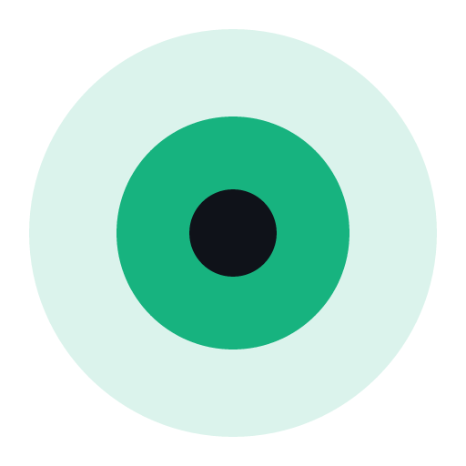

01 / READY TO GO
打开，就是工作状态。
内置独立 Node.js 和 Whistle，告别环境配置。也能连接已有实例，延续你熟悉的调试方式。
内置实例127.0.0.1:18899运行中
外部实例连接已有 Whistle 服务

WhistleBox 下载客户端
熟悉的 Whistle，更轻松的桌面体验。
把请求调试、代理规则与证书管理，
收进一个井然有序的窗口。
开源免费 · 内置 Node.js & Whistle · 无需命令行
从启动实例到切换代理，常用操作触手可及。
让工具退后一步，让问题更快浮现。
保留 Whistle 的强大，
补齐桌面工作流的最后一公里。
内置独立 Node.js 和 Whistle，告别环境配置。也能连接已有实例，延续你熟悉的调试方式。
全局代理、PAC 域名规则、释放代理接管。Windows 下随工作场景轻松切换。
管理多套域名规则配置，支持切换、导入与导出。工作环境变了，调试节奏不变。
01 *.example.com02 api.local.test
按当前实例指纹检查证书状态。在 Windows 中安装、移除应用管理的证书。
系统托盘、开机启动、亮暗主题。
顺手的小细节，让每一天都更从容。
选择适合系统的安装包。
无需另装 Node.js 或全局 Whistle。
直接启动内置实例，
或连接已有的 Whistle 服务。
配置代理，按需信任 HTTPS 证书。
在 Whistle 页面查看请求、编写规则。
选择你的平台，把 Whistle 装进桌面。
Windows 10 / 11 · x64
下载 Windows 版 在发行页选择 .exe 安装包Apple Silicon / Intel · .dmg
查看 macOS 构建 需手动配置代理与 CA 信任x64 · .deb / .AppImage
查看 Linux 构建 需桌面环境，手动配置代理与证书
附件以发行页为准。找不到对应平台？查看最新开发构建
Windows 安装包未签名；macOS 暂未签名或公证。可使用发行页 SHA256SUMS.txt
核对文件。
不需要。发行包内置独立 Node.js 与 Whistle，安装后即可使用。已有 Whistle 服务时，也可以选择外部实例模式。
WhistleBox 将 Whistle 放进桌面窗口，并提供实例管理、代理切换、配置与证书管理。请求查看及完整 Whistle 规则仍在内嵌的 Whistle 页面中使用。
应用“规则”页面用于 PAC 域名匹配，决定哪些请求走代理。请求改写、替换和转发等完整规则，请在“Whistle”页面编辑。
目前提供实验性构建，支持内置及外部实例。代理和 CA 信任需要手动配置；系统代理切换及证书自动管理目前仅支持 Windows。桌面界面、托盘与开机启动尚未完成人工验收。
项目采用 MIT 许可证。你可以在 GitHub 仓库查看源码，或通过 Issues 提交版本、系统信息和复现步骤，反馈前请先移除日志中的敏感信息。